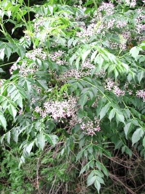

बकाइनChinaberry
Melia azedarach · Meliaceae · FLR-0067

- Scientific name
- Melia azedarach L.
- Family
- Meliaceae
- Hindi
- बकाइन
- Status here
- naturalized
- IUCN
- not evaluated
When to look कब देखें
Present all year.
बकाइन / Chinaberry
Melia azedarach L. — Meliaceae
बकाइन (डेरक / बकायन / पर्शियन लिलाक) — पूर्वी उत्तर प्रदेश के ग्रामीण क्षेत्रों, सड़कों के किनारों, और खाली पड़े भूखंडों में पाया जाने वाला एक मध्यम आकार का, अत्यंत तेजी से बढ़ने वाला और पतझड़ी (deciduous) पेड़ है। इसके पत्ते बड़े, द्विपक्षीय (bipinnate compound), और पंखदार होते हैं, जो इसे एक सुंदर व घना छतरी-नुमा आकार देते हैं। वसंत ऋतु (मार्च-अप्रैल) में इस पर हल्के बैंगनी रंग के, अत्यंत सुगंधित छोटे फूलों (fragrant lilac flowers) के गुच्छे आते हैं। इसके बाद इस पर मटर के आकार के गोल, हरे फल लगते हैं जो सर्दियों में पककर पीले (round yellow berries) हो जाते हैं। अत्यंत महत्वपूर्ण चेतावनी: इसके फल मनुष्यों और कुत्तों के लिए अत्यधिक विषैले (highly toxic to humans and dogs) होते हैं; इनमें मौजूद मेलियाटॉक्सिन नामक रसायन के कारण इन्हें खाने पर उल्टी, दौरे और मृत्यु तक हो सकती है। हालांकि, पक्षी (जैसे मैना) इन फलों को बिना किसी नुकसान के आसानी से खा सकते हैं। इसके बीजों से प्राप्त कड़वे तेल का उपयोग पारंपरिक कीटनाशक के रूप में किया जाता है।
Quick Identification त्वरित पहचान
| Feature | Description |
|---|---|
| Tree habit | Medium-sized deciduous tree up to 10–15 meters high, with a spreading canopy and dark brown, fissured bark |
| Leaves | Bipinnate compound leaves; leaflets are ovate-lanceolate, bright green, with sharply toothed (serrate) margins |
| Flowers | Small, fragrant, star-shaped, pale lilac-purple or lavender, with a dark purple central tube, arranged in loose clusters |
| Fruit | Spherical, hard, smooth, light yellow berries (drupes), hanging in large clusters on bare branches in winter |
| Toxicity | HIGHLY TOXIC FRUIT: The yellow berries contain meliatoxins. Do NOT eat. Keep away from children and pets. |
Field tip: Look along village roadsides in winter. Search for a medium tree that has dropped all its leaves but remains covered in thousands of dry, round, light yellow berries hanging in heavy, drooping bunches. The leaves, when present, are bipinnate and toothed.
Morphology आकारिकी
Biometrics (typical measurements of mature trees in the northern Indian plains):
| Measurement | Range |
|---|---|
| Tree height | 10–15 m |
| Trunk diameter (DBH) | 30–50 cm |
| Leaf length | 30–50 cm |
| Leaflet length | 3.0–7.0 cm |
| Flower diameter | 1.0–1.5 cm |
| Berry diameter | 1.0–1.5 cm |
Trunk and Bark: The trunk is short and straight. The bark is dark greyish-brown, developing shallow, vertical cracks and fissures as it matures.
Foliage: Alternately arranged, bipinnate or tripinnate compound leaves. The leaflets are opposite, pointed at the tip, with serrated margins, smelling slightly bitter when crushed.
Flowers: Small, star-like, light purple, with a distinctive dark purple cylindrical tube in the center formed by the fused stamens, arranged in branched panicles.
Fruit and Seeds: The fruit is a round, fleshy drupe with a hard, stony core containing 5–6 dark brown seeds. The fruit skin turns wrinkled, papery, and yellow-buff when dry, staying on the tree for months.
Associated Species / Interactions संबंधित प्रजातियाँ
- Fruit consumers: The toxic berries are eaten in winter by several bird species, including the Common Myna (Common Myna is already in the atlas), bulbuls, and parakeets, which act as seed dispersers. These birds are immune to the meliatoxins.
- Pollinators: The fragrant lilac flowers are highly attractive to butterflies, honeybees, and hoverflies.
Pests and Diseases कीट और रोग
- Whitefly: Bemisia species feed on leaf sap during dry seasons, causing leaves to turn yellow.
- Root Rot: Caused by Ganoderma in poorly drained or waterlogged soils.
- Mistletoe Parasite: Dendrophthoe falcata (a parasitic plant) often attaches to the branches, absorbing water and weakening the host tree.
Traditional and Ethnobotanical Use पारंपरिक और नृवंशवनस्पति उपयोग
- Organic Insecticide Preparation: The leaves are crushed and soaked in water overnight, and the filtered extract is sprayed on crops as a natural insect repellent. The seeds, which contain azadirachtin-like compounds, are crushed for pest control.
- Medicinal Skin Paste: The leaves are ground into a smooth paste and applied topically to treat scabies, skin eczema, and minor wounds due to its antibacterial properties (similar to neem).
- Folk Fever Decoction: The bitter bark is boiled in water to prepare a dilute decoction, used traditionally in folk medicine to manage chronic fevers and intestinal worms.
- Bead Making: The hard, grooved inner seeds (stones) have a natural hole in the center and are painted and strung together to make traditional necklaces, rosaries, and toys.
Expected Locally स्थानीय रूप से अपेक्षित
Not a field record. Written from published accounts for eastern Uttar Pradesh. No confirmed local sighting yet — if you have seen it, that is what the atlas needs.
अभी तक स्थानीय पुष्टि नहीं। यह विवरण प्रकाशित स्रोतों से है, किसी अवलोकन से नहीं।
A very common naturalized tree along village lanes and wastelands throughout the Basti district. They are regularly observed in the Harraiya, Vikramjot, and Basti blocks. Residents value the tree for its rapid growth, using the wood for firewood and temporary construction. In March, the sweet scent of the purple flowers is noticeable near village gates, though elders warn children never to put the yellow berries in their mouths.
Distribution वितरण
Global range: Native to the Himalayan foothills of northern India, Nepal, and China; now widely naturalized and invasive in tropical and subtropical regions worldwide.
In India: Found throughout all plains and drier states.
In Uttar Pradesh: Abundant state-wide in all residential, rural, and waste-land districts.
In Basti district / eastern UP: Widespread across all blocks.
Research Questions शोध प्रश्न
Anyone can investigate these | कोई भी इन प्रश्नों की जाँच कर सकता है
- How many yellow berries does a single Common Myna eat from a Chinaberry tree in a morning feeding session? — Monitor and record bird foraging counts.
- Does the leaf extract of Chinaberry kill mosquito larvae faster than a garlic extract? — Conduct larvicidal experiments.
- What is the germination rate of Chinaberry seeds when the hard inner stone is cracked open versus left intact? — Conduct planting trials.
- How many days do the dry yellow berries remain hanging on a bare Chinaberry tree during winter in Basti? — Track fruit drop dates.
- Does the planting of Chinaberry trees along village roadsides reduce the count of leaf-eating insects on nearby crops? / क्या गांवों के रास्तों पर बकाइन के पेड़ लगाने से आस-पास की फसलों पर पत्ती खाने वाले कीड़ों की संख्या कम हो जाती है? — Compare pest counts on crops near different trees.
Similar Species मिलती-जुलती प्रजातियाँ
| Species | How to tell apart | comparison |
|---|---|---|
| Neem (Azadirachta indica) | Leaves are simple pinnate (not bipinnate) and sharply curved; flowers are white; fruit is an edible green-yellow olive-like drupe | नीम — एक-पिन्नेट मुड़े हुए पत्ते, सफेद फूल, मीठे फल |
| Indian Elm (Holoptelea integrifolia) | Has simple, smooth leaves; fruit is a round, flat, papery winged disc (samara) | चिलबिल — साधारण पत्ते, चपटे पंखदार फल |
| Indian Beech (Millettia pinnata) | Has pinnate leaves; pinkish pea-like flowers; fruit is a short, flat, woody oval pod | करंज — बड़े पिन्नेट पत्ते, काठ जैसी चपटी फलियाँ |
Field rule: Medium tree with bipinnate toothed leaves, fragrant pale lilac flowers with a dark purple center tube, and clusters of round, hard, toxic yellow berries hanging on bare winter branches, is the Chinaberry.
Taxonomy & Classification वर्गीकरण
Original description. Carl Linnaeus described the Chinaberry as Melia azedarach in 1753 in his Species Plantarum (Vol. 1, p. 384). The type locality was listed as Syria. The genus name Melia is the Greek name for the Ash tree (Fraxinus), referencing the similar pinnate leaves. The specific name azedarach is derived from the Persian āzād-darakht, meaning free or noble tree.
Subspecies. Monotypic — no subspecies are currently recognised.
Family and order placement. Placed in the order Sapindales, family Meliaceae (mahogany or neem family), subfamily Melioideae, tribe Melieae.
Phylogenetic notes. Melia azedarach is closely related to the genus Azadirachta (neem), sharing similar limonoid compounds (meliatoxins and azadirachtin) developed as chemical defenses against herbivores.
IUCN status rationale. Not evaluated (NE) by the IUCN Red List. It is a highly common, widespread, and naturalized species globally, facing no conservation threats.
Photo Gallery फोटो गैलरी
References संदर्भ
- Linnaeus, C. (1753). Species Plantarum. Laurentii Salvii, Holmiae, Vol. 1, p. 384. [original description]
- Brandis, D. (1906). Indian Trees. Archibald Constable & Co., London.
- Kirtikar, K. R. & Basu, B. D. (1935). Indian Medicinal Plants. Vol. I. Lalit Mohan Basu, Allahabad.
- Russell, L. H., Beasley, V. R. & Valdivia, R. (1986). Clinical and Pathological Aspects of Chinaberry Poisoning. Journal of Veterinary Diagnostic Investigation.
- World Flora Online (2024). Melia azedarach taxon details.
- GBIF Occurrence Data — Melia azedarach, India (2010–2025).
Source file: species/flora/trees/chinaberry.md